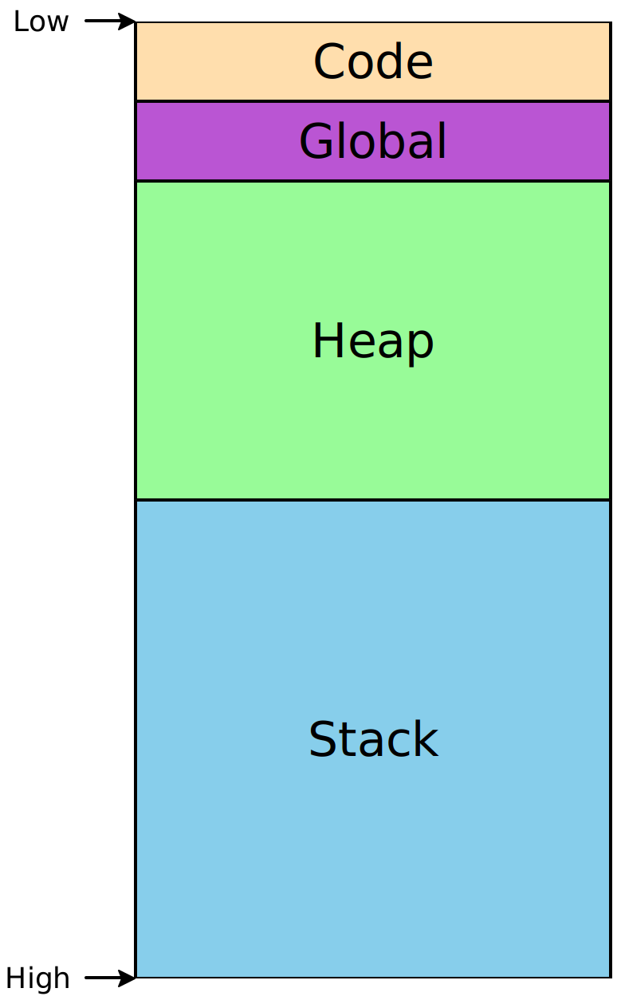
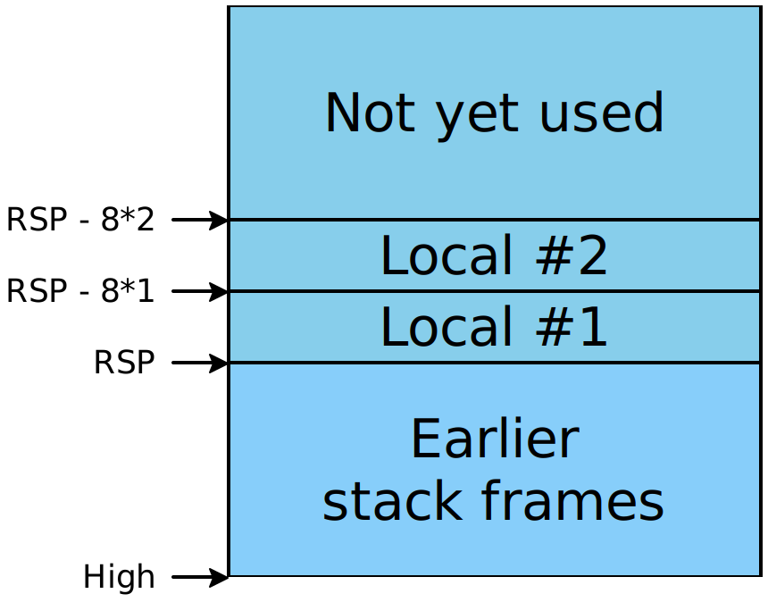

Lecture 3: Let-bindings and simple stack allocations
Our previous “compiler” didn’t do very much; it merely printed a single number. Today we’ll expand that a bit to include the let-bindings we talked about last time, and see what additional mechanisms we’ll need.
1 But first, a side-note
1.1 S-expressions and macros
In the previous homework, we asked you to decipher the tokenize function
and to write a parse function that would take a token stream and produce
an s-expression from the result. As a minor point of clarification: while this
is indeed technically parsing, programmers familiar with
s-expression-based languages will recognize this step as what’s called the
reader. Its job is solely to determine whether the parentheses balance
in the input. It does not determine whether the resulting s-expressions
conform to a particular grammar or not —
The upcoming homework will ask you to write a parser that takes s-expressions and produces a specific AST, or else throws a parse-error.
1.2 Reading unfamiliar code
When trying to understand the tokenize function, or really any function in
ML, let the types guide your thinking. (They’re the signature for the function;
you need to figure out its purpose statement.) Moreover, you see in this
particular function that the very first thing it does is call
List.fold_left, which means you can immediately deduce that it is
transforming a list, that it is consolidating it to a single result, and that
if you can determine what the accumulator parameter is doing and what each
individual step is doing, you’ll have understood the whole function. On the
same line as the call to List.fold_left is a binding
let (toks, _, _) = List.fold_left ... Those underscores are patterns that
indicate “there’s a value here, but I don’t care about it; don’t bother binding
it to an identifier.” This is an idiomatic way of indicating that parts of the
result are no longer necessary (otherwise, why bother giving something a name?), and
should immediately hint that those pieces must only have importance
within the fold, meaning they’re a crucial part of the accumulated
information. Your next step should be to find how those pieces get bound and
used within the folding function, and that will lead you to understanding the
majority of what’s going on.
In general, I find it easiest to read code not “from the top, down” or “from the bottom, up”, but rather “from the outside, in”, meaning that I start with the signatures and the outermost let-bindings in a given function (or file; it’s just a matter of what scale you’re focusing on), and work my way inward to subexpressions.
2 Recap and refactoring
Last time, we considered the following miniscule language:
Our abstract syntax was simply
type expr = int64and our compiler simply placed that integer in the appropriate place in the assembly. But let’s clean up that code somewhat: for a given number (let’s say 4410), we generated the following assembly:
section .text
global our_code_starts_here
our_code_starts_here:
mov RAX, 4410
retOf all of that code, only one line corresponds to our input program – the rest is scaffolding. Let’s refactor our compiler into two pieces, as follows:
type reg =
| RAX (* the register where we place answers *)
type arg =
| Const of int64 (* explicit numeric constants *)
| Reg of reg (* any named register *)
type instruction =
| IMov of arg * arg (* Move the value of the right-side arg into the left-arg *)
let asm_to_string (asm : instruction list) : string =
(* do something to get a string of assembly *)
(* REFACTORING STARTS HERE *)
(* compile_expr is responsible for compiling just a single expression,
and does not care about the surrounding scaffolding *)
let compile_expr (e : expr) : instruction list =
[ IMov(Reg(RAX), Const(e)) ]
;;
(* compile_prog surrounds a compiled program by whatever scaffolding is needed *)
let compile_prog (e : expr) : string =
(* compile the program *)
let instrs = compile_expr e in
(* convert it to a textual form *)
let asm_string = asm_to_string instrs in
(* surround it with the necessary scaffolding *)
let prelude = "
section .text
global our_code_starts_here
our_code_starts_here:" in
let suffix = "ret" in
prelude ^ "\n" ^ asm_string ^ "\n" ^ suffix
;;This is a bit more code than we previously had, but it’s much more usefully
organized: compile_prog isn’t going to change 1For a little while!
The details of this function will get more elaborate, and we’ll actually wrap
this function in a larger pipeline, but the overall signature and purpose of
the function will remain unchanged., and compile_expr will simply grow to
accomodate more elaborate expression forms.
3 Growing the language: adding (and subtracting) 1
Every time we enhance our source language, we need to consider several things:
Its impact on the concrete syntax of the language
Examples using the new enhancements, so we build intuition of them
Its impact on the abstract syntax and semantics of the language
Any new or changed transformations needed to process the new forms
Executable tests to confirm the enhancement works as intended
Let’s start by adding increment and decrement operations to our language.
3.1 The new concrete syntax
3.2 Examples
These are not just example programs in the new language, but pairs of example programs and their intended behavior:
Concrete Syntax |
| Answer |
|
|
|
|
|
|
|
|
|
|
|
|
3.3 Enhancing the abstract syntax
type expr =
| Num of int64
| Add1 of expr
| Sub1 of exprBased on the examples above, the semantics for add1 and sub1
should be fairly obvious: they evaluate their argument to a number, and add or
subtract one from it.
Exercise
Design an interpreter for this language. What should its signature be, and why?
3.4 Enhancing the transformations
To compile addition and subtraction, we need to enhance our knowledge of
assembly. We’ll introduce one new instruction: add <dest>, <val> will
increment the destination by the right-side value. (This mutates the
destination, so if we still need the old value, we’ll need to have saved it
somewhere else, first.) We’ll correspondingly enhance our definition of
instruction to represent this new form:
type instruction = ...
| IAdd of arg * arg (* Increment the left-hand arg by the value of the right-hand arg *)Do Now!
Given this new instruction, work out the desired assembly for the examples above.
Let’s consider the second example: add1(42). To compile this, we
should load 42 into RAX, and then add 1 to it. Or in symbols,
mov RAX, 42
add RAX, 1The last example is similar: given
~hl:4:s~sub1(~hl:3:s~add1(~hl:2:s~add1(~hl:1:s~42~hl:1:e~)~hl:2:e~)~hl:3:e~)~hl:4:e~,
we want to
load 42, then add 1 to it, then add 1 to that, then subtract 1 from that
result. We currently only have add, though, so we’ll add -1 instead of subtracting:
~hl:1:s~mov RAX, 42~hl:1:e~
~hl:2:s~add RAX, 1~hl:2:e~
~hl:3:s~add RAX, 1~hl:3:e~
~hl:4:s~add RAX, -1~hl:4:e~Notice how each piece of the input program corresponds to a related piece of the output assembly.
Our compile_expr function now looks like this:
let rec compile_expr (e : expr) : instruction list =
match e with
| Num n -> [ IMov(Reg(RAX), Const(n)) ]
| Add1 e -> (* ??? *)
| Sub1 e -> (* ??? *)Do Now!
Try to complete this scaffolding yourself.
The key observation in the hand-written assembly above is that our translations
are compositional, that is, they recur on their subpieces, and a
translation of a composite expression is simply a function of the translations
of its pieces. Moreover, we know that constants always wind up in RAX,
and add1 mutates in place, which means that our answers will always be in
RAX as desired. So our compiler for this language is
let rec compile_expr (e : expr) : instruction list =
match e with
| Num n -> [ IMov(Reg(RAX), Const(n)) ]
| Add1 e -> (compile_expr e) @ [ IAdd(Reg(RAX), Const(1L)) ]
| Sub1 e -> (compile_expr e) @ [ IAdd(Reg(RAX), Const(Int64.neg 1L)) ]3.5 Testing
Do Now!
Run the given source programs through our compiler pipeline. It should give us exactly the handwritten assembly we intend. If not, debug the compiler until it does.
Exercise
Extend this language with a new operation:
double(expr)should produce twice the value of the inner expression. Go through the five stages above: concrete syntax, examples, abstract syntax, transformation, and tests. Do we need any new features of the compiler pipeline, or of assembly, in order to achive this? What if the operation werehalve(expr)instead?
Exercise
There are other assembly instructions we could have added to our output language. The
subinstruction is the counterpart toadd, but performs subtraction instead. Theincanddecinstructions specifically add or subtract1. Enhance our definition ofinstructionto include one or more of these new instructions, and modifycompile_expr(and any other functions necessary) to take advantage of them.
4 Growing the language: adding let
As above, every time we enhance our source language, we need to consider several things:
Its impact on the concrete syntax of the language
Examples using the new enhancements, so we build intuition of them
Its impact on the abstract syntax and semantics of the language
Any new or changed transformations needed to process the new forms
Executable tests to confirm the enhancement works as intended
4.1 The new syntax, both concrete and abstract
Let’s grow the language above further, by adding the concepts of identifiers and let-bindings:
and its corresponding abstract syntax
type expr = ...
| Id of string
| Let of string * expr * expr4.2 Examples and semantics
Do Now!
Extend the interpreter from above to handle the new constructs in this language. You will need a function with signature
interp: expr -> int...and you will certainly need a helper function. What should that function do, and what should its signature be?
Writing this interpreter is straightforward, at least initially: numbers evaluate to themselves, and adding or subtracting one from an expression should simply evaluate the expression and then add or subtract one from the result. But what should we do about identifiers and let-bindings?
Something needs to keep track of what each identifier currently means, which
implies we need an environment. The type of that environment leads to two
“obvious” design choices: we could match each identifier to the expression
that it was bound to, leading to a type env = (string * expr) list, or we
could match each identifier to the result of evaluating that expression,
leading to a type definition of type env = (string * int) list. In this
language, there is no distinction in meaning between the two —
Do Now!
Suppose we added an infix
Plus of expr * exproperation. Construct a program whose running time is drastically worse with the first environment type, compared to the second environment type.Suppose we added an expression
Print of exprthat both prints its argument to the console, and evaluates to the same value as its argument. Construct a program whose behavior is actually different with the two environment types.
The former environment type leads to what’s known as lazy behavior, where an identifier is evaluated to a result on demand, while the latter environment type leads to what’s known as eager behavior, where an expression is fully evaluated before being bound to an identifier, and never needs to be evaluated again.
Once we have the notion of an environment, interpreting let and
identifiers is easy: the former extends the environment, and the latter looks
up the identifier name in the environment. But is it really that simple?
As soon as we introduce names and bindings, we have to contend with the notion
of scope, that is, which names are available for use within any given
expression. Let us declare that the intended meaning of let x = e1 in e2
is such that x can be used in the second expression, but cannot be used in
the first one.2We’ll see somewhat later how to implement let rec,
where x is available in both subexpressions. So one potential meaningless
program in our language would be let x = 5 in add1(anything_but_x).
Exercise
Are there other potential forms of failure for our current language? Explain them, if any.
We need to decide on a semantics for multiple bindings of the “same name”: what
should the program let x = 1 in let x = 2 in x mean? We could decree that
such a program is simply in error, but it is more convenient to decide that it
evaluates to 2, that is, inner bindings shadow outer ones.
Now that we know what our programs are supposed to mean, let’s try to compile them instead of interpreting them. For now, let’s assume that scoping errors cannot happen; we’ll need to revisit this faulty assumption and ensure it later.
5 The stack
Immediately, we can see two key challenges in compiling this code: in the
little fragment of assembly that we currently know, we have no notion of
“identifier names”, and we certainly have no notion of “environments”. Worse,
we can see that a single register can’t possibly be enough, since we may need
to keep track of several names simultaneously.3To be fair, this language
is simple enough that we actually don’t really need to; we could optimize it
easily such that it never needs more than one. But as such optimizations won’t
always work for us, we need to handle this case more generally. So how
can we make progress? One key insight is to broaden what we think of when considering
names. In our interpreter, a name was used to look up what value we
meant. But realistically, any unique identifier will suffice, and all
our values will ultimately need to exist somewhere in memory at runtime.
Therefore we can replace our notion of a name is a string with a
name is a memory address. This leads to our second key insight: during
compilation, we can maintain an environment of type env = (string * address) list
(for some still-to-be-determined type address). We can extend
this environment with new addresses for new identifiers, each time we compile a
let-binding, and we can look up the relevant address every time we compile an
identifier. Once we’ve done so, we don’t need this environment at
runtime —
To make any further progress, we need to know a little bit about how memory is used in programs. Memory is conceptually just a giant array of bytes, addressed from 0 to 264 (on 64-bit machines). There are restrictions on which addresses can be used, and conventions on how to use them appropriately. Programs don’t start at memory address 0, or at address 264, but they do have access to some contiguous region:

The Code segment includes the code for our program. The Global
segment includes any global data that should be available throughout our
program’s execution. The Heap includes memory that is dynamically
allocated as our program runs —
Because the heap and the stack segments are adjacent to each other, care must be taken to ensure they don’t actually overlap each other, or else the same region of memory would not have a unique interpretation, and our program would crash. This implies that as we start using addresses within each region, one convenient way to ensure such a separation is to choose addresses from opposite ends. Historically, the convention has been that the heap grows upwards from lower addresses, while the stack grows downward from higher addresses.4This makes allocating and using arrays particularly easy, as the ith element will simply be i words away from the starting address of the array.
The stack itself must conform to a particular structure, so that functions can
call each other reliably. This is (part of) what’s known as the calling
convention, and we’ll add more details to this later. For now, the high-level
picture is that the stack is divided into stack frames, one per
function-in-progress, that each stack frame can be used freely by its function,
and that when the function returns, its stack frame is freed for use by future
calls. (Hence the appropriateness of the name “stack”: stack frames obey a
last-in-first-out discipline as functions call one another and return.) When a
function is called, it needs to be told where its stack frame begins. Per the
calling convention, this address is stored in the RSP register (short for
“stack pointer”)5This is a simplification. We’ll see the fuller rules
soon.. Addresses lower than RSP are free for use; addresses
greater than RSP are already used and should not be tampered
with:

6 Allocating identifiers on the stack
The description above lets us refine our compilation challenge: we have an
arbitrary number of addresses available to us on the stack, at locations
RSP - 8 * 1, RSP - 8 * 2, ... RSP - 8 * i. (The factor of 8
comes because we’re targeting 64-bit machines, and addresses are measured in
bytes.) Therefore:
Exercise
Given the description of the stack above, come up with a strategy for allocating numbers to each identifier in the program, such that identifiers that are potentially needed simultaneously are mapped to different numbers.
6.1 Attempt 1: Naive allocation
One possibility is simply to give every unique binding its own unique integer. Trivially, if we reserve enough stack space for all bindings, and every binding gets its own stack slot, then no two bindings will conflict with each other and our program will work properly.
In the following examples, the code is on the left, and the mappings of names to stack slots is on the right.
let x = 10 (* [] *)
in add1(x) (* [ x --> 1 ] *)
let x = 10 (* [] *)
in let y = add1(x) (* [x --> 1] *)
in let z = add1(y) (* [y --> 2, x --> 1] *)
in add1(z) (* [z --> 3, y --> 2, x --> 1] *)
let a = 10 (* [] *)
in let c = let b = add1(a) (* [a --> 1] *)
in let d = add1(b) (* [b --> 2, a --> 1] *)
in add1(b) (* [d --> 3, b --> 2, a --> 1] *)
in add1(c) (* [c --> 4, d --> 3, b --> 2, a --> 1] *)We can implement this strategy fairly easily: simply keep a global mutable
counter of how many variables have been seen, and a global mutable table
mapping names to counters. But as the last example shows, this is wasteful of
space: in the final line, neither b nor d are in scope, but their
stack slots are still reserved. As programs get bigger, this would be very
inefficient.
An equally important, though much subtler, problem is the difficulty of
testing this implementation. We would expect that compile_expr
should be a deterministic function, and that compiling the same program twice
in a row should produce identical output. But because of mutable state, this
is not true: the second time through, our global counter has been incremented
beyond its initial value, so all our stack slots will be offset by an unwanted
amount. We could try to resolve this by having some way to “reset”
the counter to its initial value, but now we have two new hazards: we have to
remember to reset it exactly when we mean to, and we have to remember
not to reset it at any other time (even if it would be “convenient”).
This is an example of the singleton anti-pattern: having a single global value
is almost always undesirable, because you often want at least two such values
—
(Anecdotally: a growing trend in compiler architecture is to design a language server, which basically takes the compiler and leaves it running as a service that can be repeatedly queried to recompile files on demand. This helps amortize the increasingly large startup cost of sophisticated compilers, and makes it much easier to build language support for new languages into new editors. But having “compilers as a service” implies that they must be exceedingly careful of mutable state, or else subsequent compilations might produce different, potentially incorrect, results than earlier ones! A similar bug hit the Pyret compiler, and caused our parser to behave statefully and therefore wrongly: it took a painfully long time to diagnose and fix this mistake...)
6.2 Attempt 2: Stack allocation
A closer reading of the code reveals that our usage of let bindings also forms a stack discipline: as we enter the bodies of let-expressions, only the bindings of those particular let-expressions are in scope; everything else is unavailable. And since we can trace a straight-line path from any given let-body out through its parents to the outermost expression of a given program, we only need to maintain uniqueness among the variables on those paths. Here are the same examples as above, with this new strategy:
let x = 10 (* [] *)
in add1(x) (* [ x --> 1 ] *)
let x = 10 (* [] *)
in let y = add1(x) (* [x --> 1] *)
in let z = add1(y) (* [y --> 2, x --> 1] *)
in add1(z) (* [z --> 3, y --> 2, x --> 1] *)
let a = 10 (* [] *)
in let c = let b = add1(a) (* [a --> 1] *)
in let d = add1(b) (* [b --> 2, a --> 1] *)
in add1(b) (* [d --> 3, b --> 2, a --> 1] *)
in add1(c) (* [c --> 2, a --> 1] *)Only the last line differs, but it is typical of what this algorithm can
achieve. Let’s work through the examples above to see their intended compiled
assembly forms.6Note that we do not care at all, right now, about
inefficient assembly. There are clearly a lot of wasted instructions that move
a value out of RAX only to move it right back again. We’ll consider
cleaning these up in a later, more general-purpose compiler pass. Each
binding is colored in a unique color, and the corresponding assembly is
highlighted to match.
|
| |
|
| |
|
| |
Additionally, this algorithm is much easier to implement than the previous one:
adding a binding to the environment simply allocates it at a slot equal to the
new size of the environment. As we descend into a let-binding, we keep the
current environment. As we descend into a let-body, we augment the environment
with the new binding. And as we exit a let-expression, we discard the
augmented environment —
7 Supporting let: Implementing Attempt 2
7.1 Extending our transformations
We need to enhance our definition of registers and arguments:
type reg = ...
| RSP (* the stack pointer, below which we can use memory *)
type arg = ...
| RegOffset of reg * int (* RegOffset(reg, i) represents address [reg + 8*i] *)type env = (string * int) listfun lookup name env =
match env with
| [] -> failwith (sprintf "Identifier %s not found in environment" name)
| (n, i)::rest ->
if n = name then i else (lookup name rest)fun add name env : (env * int) =
let slot = 1 + (List.length env) in
((name, slot)::env, slot)Now our compilation is straightforward. We sketch just the let-binding case; we leave the others as an exercise:
let rec compile exp env =
match exp with
| Let(x, e, b) ->
let (env', slot) = add x env in
(* Compile the binding, and get the result into RAX *)
(compile e env)
(* Copy the result in RAX into the appropriate stack slot *)
@ [ IMov(RegOffset(RSP, ~-1 * slot), Reg(RAX)) ]
(* Compile the body, given that x is in the correct slot when it's needed *)
@ (compile b env')
| ...7.2 Testing
Exercise
Complete this compiler, and test that it works on all these and any other examples you can throw at it.
1For a little while! The details of this function will get more elaborate, and we’ll actually wrap this function in a larger pipeline, but the overall signature and purpose of the function will remain unchanged.
2We’ll see somewhat later how to implement let rec,
where x is available in both subexpressions.
3To be fair, this language is simple enough that we actually don’t really need to; we could optimize it easily such that it never needs more than one. But as such optimizations won’t always work for us, we need to handle this case more generally.
4This makes allocating and using arrays particularly easy, as the ith element will simply be i words away from the starting address of the array.
5This is a simplification. We’ll see the fuller rules soon.
6Note that we do not care at all, right now, about
inefficient assembly. There are clearly a lot of wasted instructions that move
a value out of RAX only to move it right back again. We’ll consider
cleaning these up in a later, more general-purpose compiler pass.